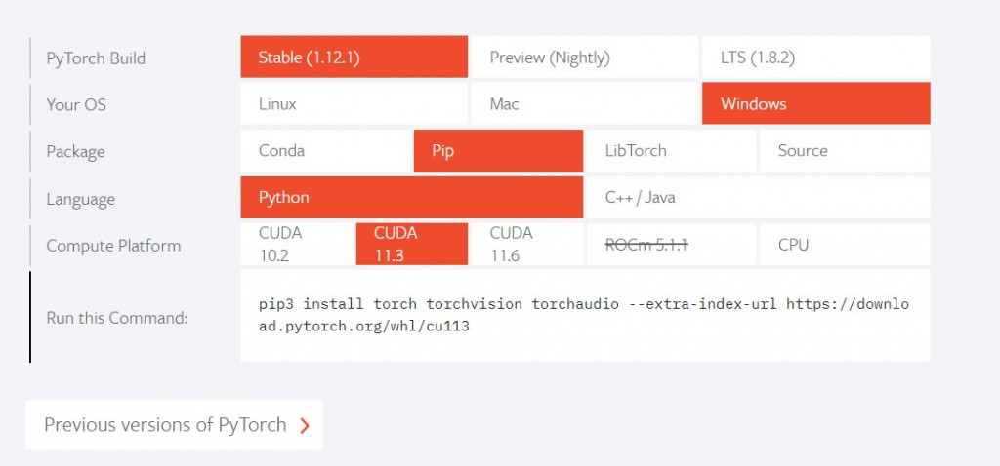

【day8】解析gz檔案 & 使用Pytorch做CIFAR10影像辨識 (下)
發布日期: 2022-09-12 03:48:00
原文連結: https://ithelp.ithome.com.tw/articles/10289426
為何要使用GPU加速
在實作CNN與LSTM時的因為資料量較小只需用到CPU運算，但後續課程中的資料會越來越多，所以運算時間會越來越久，這時就會使用到GPU去加速程式。
我們先了解GPU為何能夠加速程式就要先知道GPU的構造，GPU是由許多的乘數累加器（Multiply Accumulate)組成，這種運算的動作是將資料相乘後加上累加器後再存入累加器(累加器1 <- 累加器1 + 資料1x資料2)，而在神經網路中可以將矩陣放入累加器中運算，且在乘數累加器中只需使用一個指令就能完成上述的動作，從而提高運算的速度，簡單來說就是GPU能夠用簡短的方式傳輸大量資料。
CIFAR10影像辨識
今天的課程會有許多【day3】來辨識圖像-深度神經網路(Deep Neural Network)與【day4】找到圖片的特徵-捲積神經網路(Convolutional neural network)的知識與一些延伸，若是有不了解的地方可以回顧一下。
- 1.Pytorch版本安裝
- 2.函式庫介紹與安裝
- 3.創建資料集
- 4.架構神經網路
- 5.訓練神經網路
Pytorch版本安裝
我們前幾天再安裝函式庫都是使用pip install 函式庫名稱安裝程式，但使用這種方式安裝pytorch卻會發現是CPU版本，那麼該怎麼安裝GPU版本呢?
先到Pytorch的官方網站會看到INSTALL PYTORCH，之後選擇安裝的方式(pip)與cuda版本(基本上都是11.3)，就會得到一串pip的指令

之後輸入就安裝完畢了
pip3 install torch torchvision torchaudio --extra-index-url https://download.pytorch.org/whl/cu113
函式庫介紹與安裝
#如果到現在的課程都有跟上，那應該只會缺少tqdm函式庫
pip install tqdm
接下來介紹一下今天會使用的函式庫
#系統相關操作
import os
#深度學習函式庫
import torch
#神經元架構與損失函數
import torch.nn as nn
#激勵函數
import torch.nn.functional as F
#優化器
import torch.optim as optim
#圖像前處理
import torchvision.transforms as transforms
#矩陣操作
import numpy as np
#圖像操作
from cv2 import imread
#創建資料集
from torch.utils.data import Dataset, DataLoader
#顯示進度條
from tqdm import tqdm
創建資料集
我們前幾天的實作都是先將資料放入一個array中，再將array給予神經網路去運算，但是在pytorch中不會使用這種方式，因為pytorch沒辦法像keras那樣指定batch size與epoch，所以在pytorch中會先將變成dataset後再轉換成dataloader，才能夠指定batch size等參數，我們先看一下pytorch創建dataset的方式。
#繼承Dataset這一個class(需要繼承pytorch設定好的class並新增自己的資料)
class dataset(Dataset):
#初始化資料的地方
def __init__(self,data):
#創建資料的地方
#每次訓練時會通過__getitem__取得我們需要訓練的資料
def __getitem__(self,index):
#訓練當前的index與資料
#判斷資料的大小
def __len__(self):
#判斷index的上限
return len(self.data)
在這邊需要注意若我們需要的處理資料(讀檔、正規化)，需要在init內完成，而不是在getitem裡面，因為pytorch在訓練的時候會從getitem這一個function裡取資料，如果寫在裡面會使每取一筆資料，就需要重新處理一次，這樣子會導致程式訓練的時間變得更久。
若使用GPU訓練的人要注意處理資料時千萬不要在建立資料時，將資料放入GPU中處理，例如:
def __init__(self,data):
#cuda()會將資料放入顯卡
self.data = data.cuda()
這樣子會將所有的資料放入顯卡當中，且不會釋放，若是要將資料放入GPU中，應先將資料變成dataloader的形式再使用cuda()放入到GPU當中。
接下來開始處理昨天解析出來的CRFAR10圖像，透過昨天學習到的listdir讀取圖片並放到list當中。
data = []
for label in os.listdir(path):
for pic in os.listdir(path + '/' + label):
#cv2.imread(path)可以將圖片轉換為array
cv_pic = imread(f'{path}/{label}/{pic}')
data.append([cv_pic, int(label)])
之後需要對圖片正規化，這裡可以利用transforms.Compose()定義我們想要做的操作。
#將資料轉化成Tensor後Normalize
transform = transforms.Compose([transforms.ToTensor(),
transforms.Normalize((0.5,0.5,0.5),(0.5,0.5,0.5))
])
這樣就可以把transform做為一個function使用了
transform(data)
我們將整個程式組合起來，這樣就可以創建資料集了
class CRFAR10(Dataset):
def __init__(self, path, transform):
self.data = []
for label in os.listdir(path):
for pic in os.listdir(path + '/' + label):
cv_pic = imread(f'{path}/{label}/{pic}')
self.data.append([cv_pic, int(label)])
def __getitem__(self,index):
datas = transform(self.data[index][0])
labels = torch.tensor(self.data[index][1])
return datas, labels
def __len__(self):
return len(self.data)
transform = transforms.Compose([transforms.ToTensor(),
transforms.Normalize((0.5,0.5,0.5),(0.5,0.5,0.5))
])
train_set = CRFAR10(r'pic/train/', transform)
test_set = CRFAR10(r'pic/test/', transform)
train_loader = DataLoader(train_set, batch_size = 128,shuffle = True, num_workers = 0)
test_loader = DataLoader(test_set, batch_size = 128, shuffle = True, num_workers = 0)
架構神經網路
先來看pytorch中該怎麼架構神經網路的格式。我們需要在init定義神經網路的種類與每層的輸入大小，並且使用forward來執行動作。
#繼承nn.Module
class CNN(nn.Module):
def __init__(self):
#呼叫nn.Module裡面init的資料
super().__init__()
#定義神經網路
def forward(self, x):
#定義操作
知道格式後，就可以來架構神經網路了，今天要的網路構造如下:
捲積層1->池化層->捲積層2->池化層->全連接層 (CNN)
這代表需要建立2個CNN、1個池化層與n個全連接層我們先看到官方說明:
torch.nn.Conv2d(in_channels, out_channels, kernel_size, stride=1, padding=0, dilation=1, groups=1, bias=True, padding_mode='zeros', device=None, dtype=None)
官方文件告訴我們在CNN中需要定義三個參數(in_channels, out_channels, kernel_size)，在這之中輸入是唯一需要知道的參數，在CRFAR10資料集中圖片是彩色的，這代表我們的in_channels會是3(RGB)，out_channels與kernel_size我們需要通過多次測試與經驗，才能知道最佳的結果，我們可以先隨便設定一個值(這邊先設定out_channels = 6與kernel_size = 5)。
self.conv1 = nn.Conv2d(3, 6, 5)
接下來設定第二層CNN神經網路(上層設定的out_channels是6，所以我們這層的in_channels一定要是6)
self.conv2 = nn.Conv2d(6, 16, 5)
然後我們來看一下池化層的說明:
torch.nn.MaxPool2d(kernel_size, stride=None, padding=0, dilation=1, return_indices=False, ceil_mode=False)
這層是做特徵強化只會縮小圖片大小，所以不會影響到in_channels，所以可以隨意的設定kernel_size
self.pool = nn.MaxPool2d(2, 2)
接下來就會比較困難了，因為要進入到全連接層之前需要將維度攤平，所以我們要先計算最後一層的大小，我們知道輸入的大小是3x32x32的圖像，在經過了第一層CNN之後in_channels = 3 會變成out_channels = 6，那32x32會變成什麼呢?這邊我們就需要套用到CNN參數計算的方式(長或寬 + 2*(padding) - 捲積核) / 步長 + 1，我們將第一層的數據套用到公式裡面(32 + 2*0 - 5) / 1 + 1 = 28(padding預設是0)，所以經過第一層後我們的矩陣大小會變成6x28x28，在將矩陣放入池化層中(2x2)得到28/2=14，以此類推。最後會得到16x5x5的結果。
(3*32*32)捲積層1->(6*28*28)池化層->(6*14*14)捲積層2->(16*10*10)池化層->(16*5*5)全連接層(輸出10)
計算完之後就可以設定全連接層的參數
self.fc1 = nn.Linear(16 * 5 * 5, 120)
self.fc2 = nn.Linear(120, 84)
#最後輸出要為10(10分類)
self.fc3 = nn.Linear(84, 10)
這樣就建立好神經網路的架構了
def __init__(self):
super().__init__()
#捲積層1
self.conv1 = nn.Conv2d(3, 6, 5)
#捲積層2
self.conv2 = nn.Conv2d(6, 16, 5)
#池化層
self.pool = nn.MaxPool2d(2, 2)
#全連接層
self.fc1 = nn.Linear(16 * 5 * 5, 120)
self.fc2 = nn.Linear(120, 84)
self.fc3 = nn.Linear(84, 10)
接下來要定義這些神經網路的使用方式(攤平資料、激勵函數等計算)
def forward(self, x):
#第一層使用激勵函數relu計算CNN神經網路1後丟給池化層 input(3,32,32) output(6,14,14)
x = self.pool(F.relu(self.conv1(x)))
#第二層使用激勵函數relu計算CNN神經網路2後丟給池化層 input(6,14,14) output(16,5,5)
x = self.pool(F.relu(self.conv2(x)))
#將資料攤平
x = x.view(x.size(0),-1)
#放入全連接層
x = F.relu(self.fc1(x))
x = F.relu(self.fc2(x))
x = self.fc3(x)
return x
可以看到在pytorch建立神經網路的方式明顯比keras複雜很多，在keras中只需要定義輸入與激勵函數就能輕鬆建立神經網路，而pytorch卻需要計算每層的輸入與輸出，並且還要定義使用的方法，但也因為這樣子的操作更加的自由，使我們能夠做到keras無法做到的事情。
訓練神經網路
終於來到今天的最後一步了，架構好神經網路後當然是要訓練它囉，先來看一下最基本的範例。
for data,label in dataloader:
#將訓練資料放入model裡面做預測
outputs = model(data)
#通過預測結果與label運算損失值
loss = criterion(outputs, label)
#梯度歸0
optimizer.zero_grad()
#反向傳播每個梯度的損失值
loss.backward()
#更新損失值
optimizer.step()
#剛剛建立好的神經網路
model = CNN()
#定義 Loss function
criterion = nn.CrossEntropyLoss()
#定義優化器(模型參數,學習率)
optimizer = optim.adam(model.parameters(), lr=0.001)
這邊有幾個比較重要的資訊optimizer.zero_grad()、loss.backward()、optimizer.step()，
我們知道在深度學習中需要找對最低的梯度，而我們希望每一次訓練的結果是單獨計算的，所以在訓練時常常會看到optimizer.zero_grad()來將梯度初始化，你可能會問pytorch怎麼不直接初始化呢?在訓練神經網路時，有時候希望能持續累積梯度，並通過條件控制梯度的初始化時機，這時如果pytorch把這功能寫死，那可能會導致無法得到預期的效果或是無法訓練神經網路。
loss.backward()、optimizer.step()的概念就比較簡單了，通過設定的loss function做反向傳播(Backpropagation)計算梯度後，通過optimizer.step()將計算出來的loss值交給optimizer做運算，使loss能通過優化器更快速的下降。
接下來為了讓我們知道訓練還需要多久，就可以在剛剛的程式中加入tqdm將進度條顯示出來
#先宣告tqdm的資料
train = tqdm(train_loader)
#更改剛剛的for迴圈
for cnt,(data,label) in enumerate(train, 1):
#訓練
...
#顯示放在前面的文字(通常會放這是第幾次的epoch)
train.set_description(str)
#顯示放在後面的資料(通常會是loss與acc)
# train.set_postfix(dict)
我們也可以在訓練當中切換訓練模式與測試模式。
#訓練模式
model.train()
#測試模式
model.eval()
最後把acc與loss等的計算都加入到程式當中
epochs = 10
#訓練幾次
for epoch in range(epochs):
#訓練資料、loss、準確率
train_loss = 0
train_acc = 0
train = tqdm(train_loader)
#切換成訓練模式
model.train()
#開始訓練
for cnt,(data,label) in enumerate(train, 1):
#將資料放入GPU
data,label = data.cuda() ,label.cuda()
#模型預測
outputs = model(data)
#計算loss
loss = criterion(outputs, label)
#查看模型預測的結果
_,predict_label = torch.max(outputs, 1)
#梯度歸0
optimizer.zero_grad()
#反向傳播後傳給optimizer
loss.backward()
optimizer.step()
#計算當次epoch的loss值
train_loss += loss.item()
#計算當次epoch的acc
train_acc += (predict_label==label).sum()
#顯示
train.set_description(f'train Epoch {epoch}')
train.set_postfix({'loss':float(train_loss)/cnt,'acc': float(train_acc)/cnt})
#切換測試模式
model.eval()
#測試資料、acc
test = tqdm(test_loader)
test_acc = 0
for cnt,(data,label) in enumerate(test, 1):
data,label = data.cuda() ,label.cuda()
outputs = model(data)
_,predict_label = torch.max(outputs, 1)
test_acc += (predict_label==label).sum()
test.set_description(f'test Epoch {epoch}')
test.set_postfix({'acc': float(test_acc)/cnt})
這樣就完成一支pytorch的訓練程式了~
完整程式碼
import os
import torch
import torch.nn as nn
import torch.nn.functional as F
import torch.optim as optim
import torchvision.transforms as transforms
import numpy as np
from cv2 import imread
from torch.utils.data import Dataset, DataLoader
from tqdm import tqdm
class CRFAR10(Dataset):
def __init__(self, path, transform):
self.data = []
for label in os.listdir(path):
for pic in os.listdir(path + '/' + label):
cv_pic = imread(f'{path}/{label}/{pic}')
self.data.append([cv_pic, int(label)])
def __getitem__(self,index):
datas = transform(self.data[index][0])
labels = torch.tensor(self.data[index][1])
return datas, labels
def __len__(self):
return len(self.data)
class CNN(nn.Module):
def __init__(self):
super().__init__()
self.conv1 = nn.Conv2d(3, 6, 5)
self.pool = nn.MaxPool2d(2, 2)
self.conv2 = nn.Conv2d(6, 16, 5)
self.fc1 = nn.Linear(16 * 5 * 5, 120)
self.fc2 = nn.Linear(120, 84)
self.fc3 = nn.Linear(84, 10)
#(輸入 + 2*(padding) - 捲積核) / 移動 + 1
def forward(self, x):
x = self.pool(F.relu(self.conv1(x)))
x = self.pool(F.relu(self.conv2(x)))
x = x.view(x.size(0),-1)
x = F.relu(self.fc1(x))
x = F.relu(self.fc2(x))
x = self.fc3(x)
return x
def train(train_loader,test_loader, model ,optimizer, criterion):
epochs = 10
for epoch in range(epochs):
train_loss = 0
train_acc = 0
train = tqdm(train_loader)
model.train()
for cnt,(data,label) in enumerate(train, 1):
data,label = data.cuda() ,label.cuda()
outputs = model(data)
loss = criterion(outputs, label)
_,predict_label = torch.max(outputs, 1)
optimizer.zero_grad()
loss.backward()
optimizer.step()
train_loss += loss.item()
train_acc += (predict_label==label).sum()
train.set_description(f'train Epoch {epoch}')
train.set_postfix({'loss':float(train_loss)/cnt,'acc': float(train_acc)/cnt})
model.eval()
test = tqdm(test_loader)
test_acc = 0
for cnt,(data,label) in enumerate(test, 1):
data,label = data.cuda() ,label.cuda()
outputs = model(data)
_,predict_label = torch.max(outputs, 1)
test_acc += (predict_label==label).sum()
test.set_description(f'test Epoch {epoch}')
test.set_postfix({'acc': float(test_acc)/cnt})
transform = transforms.Compose([transforms.ToTensor(),
transforms.Normalize((0.5,0.5,0.5),(0.5,0.5,0.5))
])
train_set = CRFAR10(r'pic/train/', transform)
test_set = CRFAR10(r'pic/test/', transform)
train_loader = DataLoader(train_set, batch_size = 128,shuffle = True, num_workers = 0)
test_loader = DataLoader(test_set, batch_size = 128, shuffle = True, num_workers = 0)
model = CNN().cuda()
criterion = nn.CrossEntropyLoss().cuda()
optimizer = optim.SGD(model.parameters(), lr=0.001, momentum=0.9)
train(train_loader, test_loader, model,optimizer,criterion)
今天是不是覺得難度突然上升了很多呢?當我們接觸到pytorch時就會發現，資料集需要學會如何使用class存放資料，建立神經網路需要了解網路構造與運算方式，訓練模型要學會如何使用優化器與損失函數找到最合適的梯度，這些都是keras中沒辦法接觸到的。
今天的課程因為有點複雜，有不懂的地方一定要回去看前面的資料，這樣子才能真正了解神經網路的構造與實作方式
課程中的程式碼都能從我的github專案中看到
https://github.com/AUSTIN2526/learn-AI-in-30-days